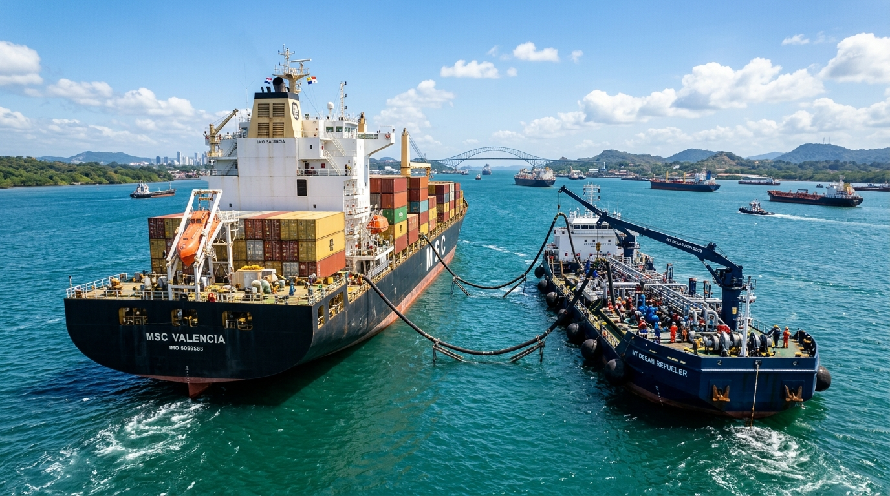

Apalancamos la infraestructura portuaria, terminales de almacenamiento y fondeaderos de aguas profundas de Panamá para optimizar el transporte, alijo y despacho de cargamentos energéticos.
El Canal de Panamá no es únicamente una vía de tránsito; es uno de los mayores centros neurálgicos de abastecimiento de combustible marino (bunkering) y transferencias de carga en el hemisferio occidental.
Coordinamos servicios marítimos de primera línea en los dos accesos oceánicos:
Atención a buques en ruta hacia la Costa Oeste de Sudamérica, México y Asia. Disponibilidad de barcazas de doble casco para suministro de VLSFO y MGO en fondeadero oficial.
Conexión directa con refinerías del Golfo de México (USGC), el Caribe y Europa. Operaciones de alijo (lightering) y almacenamiento en tanques costeros.

Soluciones integradas para asegurar que cada barril llegue a su destino con cero pérdidas y total conformidad técnica.
Gestión de fletes bajo contratos de viaje (Voyage Charter) y tiempo (Time Charter). Trabajamos exclusivamente con armadores aprobados bajo el sistema de inspección SIRE / OCIMF.
Ejecución de operaciones STS en áreas designadas para alijo y optimización de calado. Cumplimiento integral del manual de transferencias STS de OCIMF/ICS.
Alianzas con parques de tanques en terminales caribeñas y panameñas que permiten almacenar componentes y realizar mezclas de combustible según especificaciones a la medida.
El transporte de crudo y derivados exige el máximo respeto por el ecosistema marino. En Petroganso aplicamos una política rigurosa de mitigación ambiental en conjunto con la Autoridad Marítima de Panamá (AMP) y las regulaciones internacionales MARPOL.
Ningún buque es fletado sin informe de inspección vigente con menos de 6 meses de antigüedad.
Planes de emergencia aprobados a bordo de cada tanquero para respuesta inmediata ante contingencias marinas.
Coordinación anticipada con agencias marítimas de puerto para reducir tiempos de espera en rada y atracadero.
Todos los combustibles suministrados por Petroganso en los fondeaderos de Panamá cumplen con el límite de 0.50% masa/masa de azufre, reduciendo significativamente las emisiones de óxidos de azufre (SOx) a la atmósfera y protegiendo las comunidades litorales.